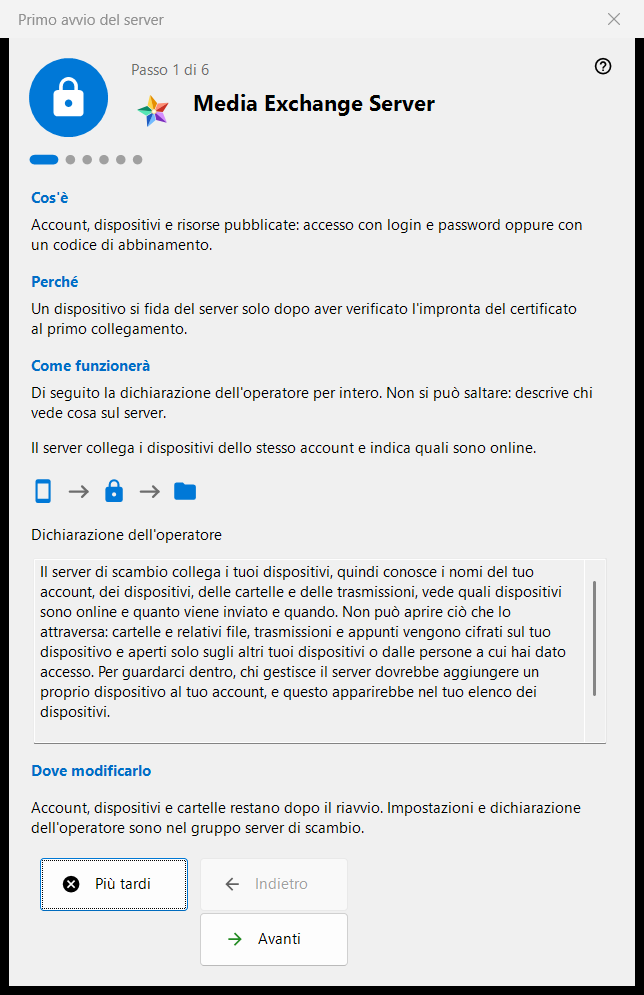
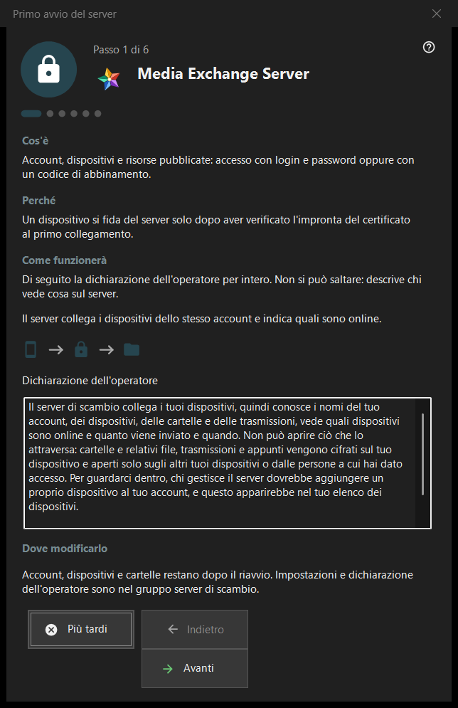

Primo avvio del server
Scopo
Una guida al primo avvio per il gruppo del server di scambio di Share Manager. Spiega che cosa diventa il computer, mostra la dichiarazione dell'operatore, imposta le porte, l'indirizzo per i client e il primo account e termina con lo stato del server. Si apre solo quando il server di scambio è presente e attivo.


In questo ordine
- Leggi la dichiarazione dell'operatore nella prima pagina.
- Controlla le porte e la regola del firewall.
- In un'edizione server senza servizio, decidi riguardo al servizio Windows.
- Compila l'indirizzo per i client.
- Crea il primo account.
- Controlla l'impronta del certificato e premi «Fine».
Gli elementi
Pagine e pulsanti
Il piè di pagina mostra «Passo N di M»; «Indietro», «Avanti» e «Più tardi» funzionano come in qualsiasi procedura guidata, e «Fine» nell'ultima pagina apre il gruppo del server di scambio del gestore. Una pagina può essere saltata senza modifiche: il server resta allora disattivato o com'era.
Dichiarazione dell'operatore
La dichiarazione completa su chi vede che cosa sul server. Non si può saltare. Il server collega i dispositivi di un account e segnala quali sono online.
Porte e firewall
Una porta di incontro per i dispositivi e un intervallo di porte per i client di terze parti. I dispositivi devono conoscere la porta del server, quindi le modifiche valgono solo per i nuovi codici. La regola del firewall appartiene al programma, perciò un cambio di porta non richiede una nuova regola. Questi valori si trovano nel gruppo del server di scambio.
Servizio Windows
Compare solo in un'edizione server in cui il servizio non esiste ancora. Un servizio mantiene il server disponibile quando nessuno ha effettuato l'accesso. La casella ricorda soltanto il tuo consenso: il servizio viene registrato dopo la creazione del primo account, con una sola richiesta di elevazione, e prima non viene installato nulla. «Registra come servizio..» nel gruppo di scambio fa lo stesso in seguito.
Indirizzo per i client
«Indirizzo per i client (host:porta):» è ciò che gli altri dispositivi usano per raggiungere questo computer. «Suggerisci un indirizzo locale» riempie il campo solo quando lo premi. Un indirizzo vuoto mantiene valido un primo avvio puramente locale, ma nasconde le trasmissioni e le connessioni alle cartelle agli altri dispositivi.
Primo account
L'account con cui accede il primo dispositivo. Scegli «Genera una password» oppure «Inserisci la tua password»; «Collega questo PC all'account» collega questo computer all'account. «Avanti» crea l'account, avvia il server e controlla il certificato. La password viene mostrata una sola volta, nella finestra esistente, e non viene memorizzata su questo PC. Un errore dopo la creazione dell'account non lo rimuove.
Il server è pronto
L'ultima pagina indica dove sono registrati l'indirizzo, l'utente e l'impronta del certificato e offre «Copia impronta» e «Stringa di connessione e codice QR..». Un dispositivo si fida del server dopo aver verificato l'impronta alla prima connessione. I collegamenti «Collega un telefono (guida)» e «Pubblica la prima cartella (guida)» portano alle pagine della guida corrispondenti.
Impostazioni del gestore · Impostazioni condivisione SFTP · Impostazioni server di scambio